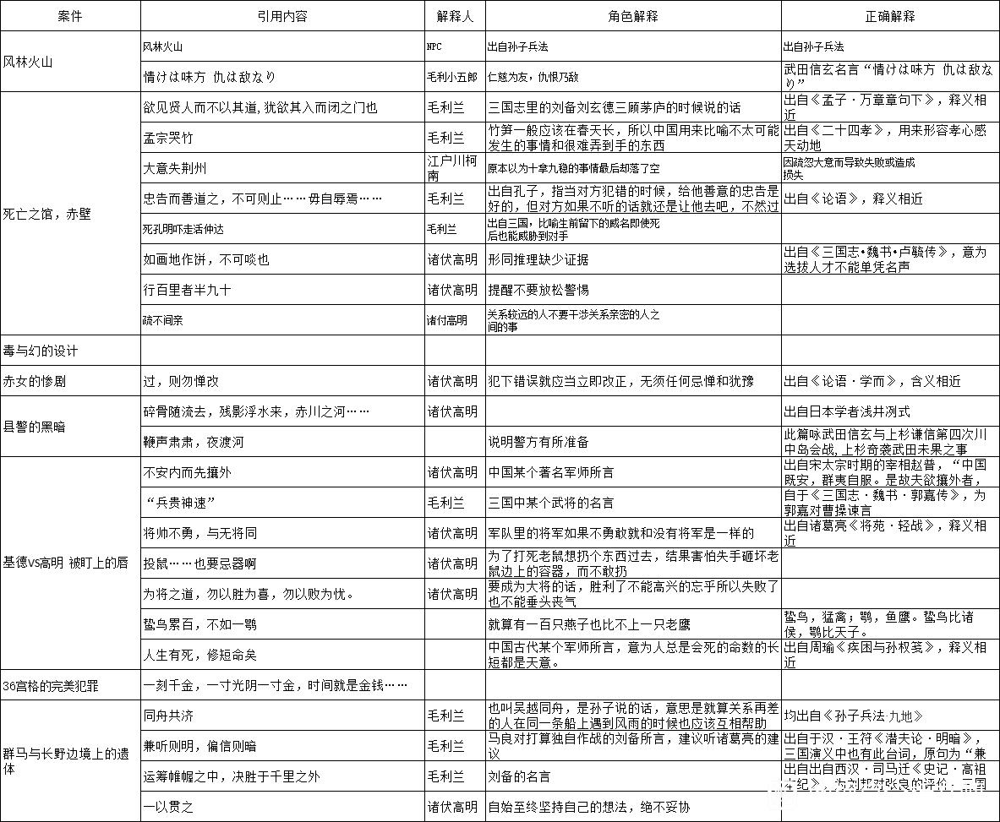

众所周知，自风林火山之后，长野组和古文联系就极为密切，毛利兰则通过“精通三国志”这一设定和长野组联系在一起。长野组中，主要承担引用古文任务的是诸伏高明。然而，角色的能力上限决定于作者的能力上限，诸伏高明的古文水准也决定于青山刚昌本人的古文水准。青山刚昌本人可能并不具备深厚的中国古典文学功底，而诸伏高明这一角色又不可避免的涉及到中国古典文学的引用。因此，青山刚昌在用典思路上的变化，特别是如何在保持诸伏高明古文高手人设的前提下规避自己的古典文学上的不足，是一个颇为有趣的问题。
诸伏高明出场的案件主要有死亡之馆 赤壁、毒与幻的设计、赤女的惨剧、县警的黑暗、基德VS高明 被盯上的唇、36宫格的完美犯罪、群马与长野边境上的遗体这七个案件。
这几个案件中，最值得关注的是死亡之馆 赤壁、县警的黑暗、基德VS高明 被盯上的唇、群马与长野边境上的遗体着四个案件，分别位于65卷、86卷、96卷、102卷，开始更新于2009年2月、2014年12月、2018年8月和2021年12月。
首先是最开始的死亡之馆 赤壁。在死亡之馆 赤壁案中，首创诸伏高明引用古文、小五郎发出疑问、毛利兰进行解释的模式，引用古文的数目堪称所有案件之最。具体的内容会贴在下面。
在这几次用典中，有几个极其严重的谬误。首先是【孟宗哭竹】，其真实含义属于二十四孝故事之一，形容孝心感天动地，而漫画中毛利兰则称则把这个成语的含义解释为：在中国用来比喻不太可能发生的事情和很难弄到手的东西。
另一个错误则是【如画地作饼，不可啖也】。这句话的实际含义是：形容名声并没有实际的用处，而青山刚昌可能把这句话和画饼充饥弄混了，以至于认为是指推理缺少证据。
这两个错误属于南辕北辙型，简直可以登上语文考试的考题。这错误有多么严重呢？举个例子，有的人言必称刚圣不可批判，我说他犹如“孟宗哭竹”，绝不是称赞他在为不可为之事，而是在讽刺他很孝。其谬误如此。
但是，在此之后，青山刚昌应该意识到了自己对古文的引用出现了严重的失误。此后毒与幻的设计这个案子，诸伏高明没有引用古文，赤女的惨剧案中诸伏高明也只引用了一句。而在县警的黑暗中，青山刚昌非常讨巧的让诸伏高明引用了两句日本文学的传统名言。
由于文化背景的原因，青山刚昌和他的助手、编辑，对日本文学的了解显然会远高于中国文化。因此说这是一种比较讨巧的做法。
但诸伏高明毕竟从名字开始就与中国文化、特别是三国文化联系紧密，使用逃避的方法也逃避不了太久。因此在基德vs高明 被盯上的唇中，诸伏高明重新开始高频率的引用古文。这一次青山刚昌与赤壁案相比，显然有所改变，引用的名言基本上没有含义上的严重谬误。并且，这一次，青山刚昌再次使用了一个非常讨巧的方式，那就是不给出具体的人名，以避免引用失误。比如赵普的名言被说成是中国某个著名军师所言，郭嘉的名言被说成是三国某个著名武将所言，周瑜的名言被说成是三国某个著名军师所言。虽然令人哭笑不得，但也实在是不能说大错特错。但是，当深入到具体的含义，比如相对冷僻的“鸷鸟累百，不如一鹗”，青山刚昌仍然表现出他对中国文化相对无知的一面。
不过，这一次成功的创作，可能重新激起了青山刚昌创作诸伏高明的信心，也让他彻底确定了“扬长避短，不深究古文含义和渊源”的路线。因此。在群马与长野边境上的遗体，也就是现在动画化的这一案中，毛利兰再次活跃起来，开始了自己的三国阐释工作，恢复了赤壁之馆案中，诸伏高明引用古文、小五郎发出疑问、毛利兰进行解释的模式。
在第96卷 基德vs高明 被盯上的唇中，尚且会把这些名言说成是三国志中某个人所言。而在第102卷中，青山刚昌则完全回避了这一点，只说是谁谁谁说的，因此绕过了这句话属于三国志还是三国演义这一问题，也不必再追寻此言的源头。比如在这一案中，诸伏高明引用了“运筹于帷幄之中，决胜于千里之外”这句话。这句话显而易见是刘邦所言，但在《三国演义》中，刘备也确实说过这样一句话，于是青山刚昌只让毛利兰解释为“这句话是刘备说的”，由此而由此回避了这句话真正的主人，也回避了对这句话进行溯源的工作。在这一模式下，他只需要手边有一本三国演义，就足以使诸伏高明的引用不会出现明显的错误。
青山刚昌显然不具备非常深厚的中国古典文学的功底，因此他但是他又有创作诸伏高明这一角色的需求。从他对中国名言的引用的变化来看，我们可以清晰地看出他是如何回避自己的缺点，扬长避短，从而尽可能的将作品修补到尽量完善的地步的。
诸伏高明出场的案件主要有死亡之馆 赤壁、毒与幻的设计、赤女的惨剧、县警的黑暗、基德VS高明 被盯上的唇、36宫格的完美犯罪、群马与长野边境上的遗体这七个案件。
这几个案件中，最值得关注的是死亡之馆 赤壁、县警的黑暗、基德VS高明 被盯上的唇、群马与长野边境上的遗体着四个案件，分别位于65卷、86卷、96卷、102卷，开始更新于2009年2月、2014年12月、2018年8月和2021年12月。
首先是最开始的死亡之馆 赤壁。在死亡之馆 赤壁案中，首创诸伏高明引用古文、小五郎发出疑问、毛利兰进行解释的模式，引用古文的数目堪称所有案件之最。具体的内容会贴在下面。
在这几次用典中，有几个极其严重的谬误。首先是【孟宗哭竹】，其真实含义属于二十四孝故事之一，形容孝心感天动地，而漫画中毛利兰则称则把这个成语的含义解释为：在中国用来比喻不太可能发生的事情和很难弄到手的东西。
另一个错误则是【如画地作饼，不可啖也】。这句话的实际含义是：形容名声并没有实际的用处，而青山刚昌可能把这句话和画饼充饥弄混了，以至于认为是指推理缺少证据。
这两个错误属于南辕北辙型，简直可以登上语文考试的考题。这错误有多么严重呢？举个例子，有的人言必称刚圣不可批判，我说他犹如“孟宗哭竹”，绝不是称赞他在为不可为之事，而是在讽刺他很孝。其谬误如此。
但是，在此之后，青山刚昌应该意识到了自己对古文的引用出现了严重的失误。此后毒与幻的设计这个案子，诸伏高明没有引用古文，赤女的惨剧案中诸伏高明也只引用了一句。而在县警的黑暗中，青山刚昌非常讨巧的让诸伏高明引用了两句日本文学的传统名言。
由于文化背景的原因，青山刚昌和他的助手、编辑，对日本文学的了解显然会远高于中国文化。因此说这是一种比较讨巧的做法。
但诸伏高明毕竟从名字开始就与中国文化、特别是三国文化联系紧密，使用逃避的方法也逃避不了太久。因此在基德vs高明 被盯上的唇中，诸伏高明重新开始高频率的引用古文。这一次青山刚昌与赤壁案相比，显然有所改变，引用的名言基本上没有含义上的严重谬误。并且，这一次，青山刚昌再次使用了一个非常讨巧的方式，那就是不给出具体的人名，以避免引用失误。比如赵普的名言被说成是中国某个著名军师所言，郭嘉的名言被说成是三国某个著名武将所言，周瑜的名言被说成是三国某个著名军师所言。虽然令人哭笑不得，但也实在是不能说大错特错。但是，当深入到具体的含义，比如相对冷僻的“鸷鸟累百，不如一鹗”，青山刚昌仍然表现出他对中国文化相对无知的一面。
不过，这一次成功的创作，可能重新激起了青山刚昌创作诸伏高明的信心，也让他彻底确定了“扬长避短，不深究古文含义和渊源”的路线。因此。在群马与长野边境上的遗体，也就是现在动画化的这一案中，毛利兰再次活跃起来，开始了自己的三国阐释工作，恢复了赤壁之馆案中，诸伏高明引用古文、小五郎发出疑问、毛利兰进行解释的模式。
在第96卷 基德vs高明 被盯上的唇中，尚且会把这些名言说成是三国志中某个人所言。而在第102卷中，青山刚昌则完全回避了这一点，只说是谁谁谁说的，因此绕过了这句话属于三国志还是三国演义这一问题，也不必再追寻此言的源头。比如在这一案中，诸伏高明引用了“运筹于帷幄之中，决胜于千里之外”这句话。这句话显而易见是刘邦所言，但在《三国演义》中，刘备也确实说过这样一句话，于是青山刚昌只让毛利兰解释为“这句话是刘备说的”，由此而由此回避了这句话真正的主人，也回避了对这句话进行溯源的工作。在这一模式下，他只需要手边有一本三国演义，就足以使诸伏高明的引用不会出现明显的错误。
青山刚昌显然不具备非常深厚的中国古典文学的功底，因此他但是他又有创作诸伏高明这一角色的需求。从他对中国名言的引用的变化来看，我们可以清晰地看出他是如何回避自己的缺点，扬长避短，从而尽可能的将作品修补到尽量完善的地步的。
附：部分长野组案件涉及的用典及准确性考察

前排支持淘气老弟
码住明天看
淘气大大我是你的粉丝啊！
cy
cy
插个眼先，明天看
我也是看完新一集，突然想起这茬了，连夜翻了长野组的漫画。所以我蛮好奇，小兰“精通”中国典故会有什么特殊的指向吗？因为很明显日本历史她是略逊色的，但每到中国典故解读她会有点兴奋过头的感觉。我记得当年看赤壁的时候，她的“精通”让我有些恍惚，因为是从未出现过的设定，后来我自己理解为可能在学校学得比较好吧（他们学这个吗？）。但边界线这次，小兰不仅看起来更兴奋了，连上原都在心里不止一次地惊呼“小兰好厉害”，总觉得是在强调这件事……
2024-05-19 18:33 | drpe26:看到你这个回复，我突然认为可能是因为小五郎喜欢历史，所以兰受到熏陶（可能小五郎根据梅兰竹菊起的名？）。但是又看了看《新一与小兰·麻将牌与七夕的回忆》，好像有些地方的日麻也用梅兰竹菊牌😂 行吧，可能是小五郎打着牌的时候给兰取得名😂2024-08-05 13:25 | 没有晚安_Y:这里我也觉得奇怪 就是我甚至在想老贼这么写有什么用意吗 多次让上原夸赞这样
请一个中国文学顾问的事情73非得死磕
整理的很好
大佬厉害了
很强，我看漫画的时候也觉得高明很多时候胡乱用典，只觉得比较尬，没想到还有这么一层，青山真是老奸巨猾。
小兰之所以变成三国迷，我还是倾向于要映射关羽守荆州时的【除死方休】，这句话太严重了，柯南天天死也要保护小兰，显得非常不吉利。
日本的中国古典文学是和中国文化有关的日本本土文化，归根到底是日本本土文化，很多东西和咱们这就不一样。所以你就不可能要求青山不出错，三国是重灾区，日本的三国简单说是杂揉了三国志、三国演义用日本战国史的形式衍生出的玩意儿
小兰“三国迷”的原因，我倾向于她和小五郎是诸伏高明的“笨蛋华生”。诸伏高明只会酷酷的拽文，总不能每一次都亲自解释含义，但是漫画又必须得有个人负责向读者（尤其是小孩子）解释含义，遍览漫画，能够不厌其烦每次都解释含义的，只有毛利兰了。这也是所谓的“诸伏高明引用，小五郎发出疑问，毛利兰负责解释”的理想模式。柯南是不可能负责解释的，因为负责解释的人形象高光不如负责引用的人，柯南只会和高明对飙古文。
2024-05-20 00:24 | 观乐大人:诸伏高明这个角色，就是基于三国文化而来，而不是中国古典文化，所以引经据典只会到三国。
小兰的水平被青山打了补丁的。她原本的中国历史水平局限于三国史，风林火山篇关于孙子兵法的典故是由大叔向观众介绍的。而在最近漫画改编边境线杀人事件中，兰已经能很准确地说出《孙子·九地》篇中的吴越同舟典故。当然不能排除由于武田信玄的原因，青山认为风林火山涉及日本战国史，特意安排小兰不是很清楚。
2024-05-20 00:22 | 櫻井青城:好像是有特意区分了中日文化的，啄木鸟篇里小兰就变成了提问者，小五郎成为了解答者，风林山火虽源自孙子，但那一篇里主要是以武田信玄的角度展开的，所以划分给小五郎了吧